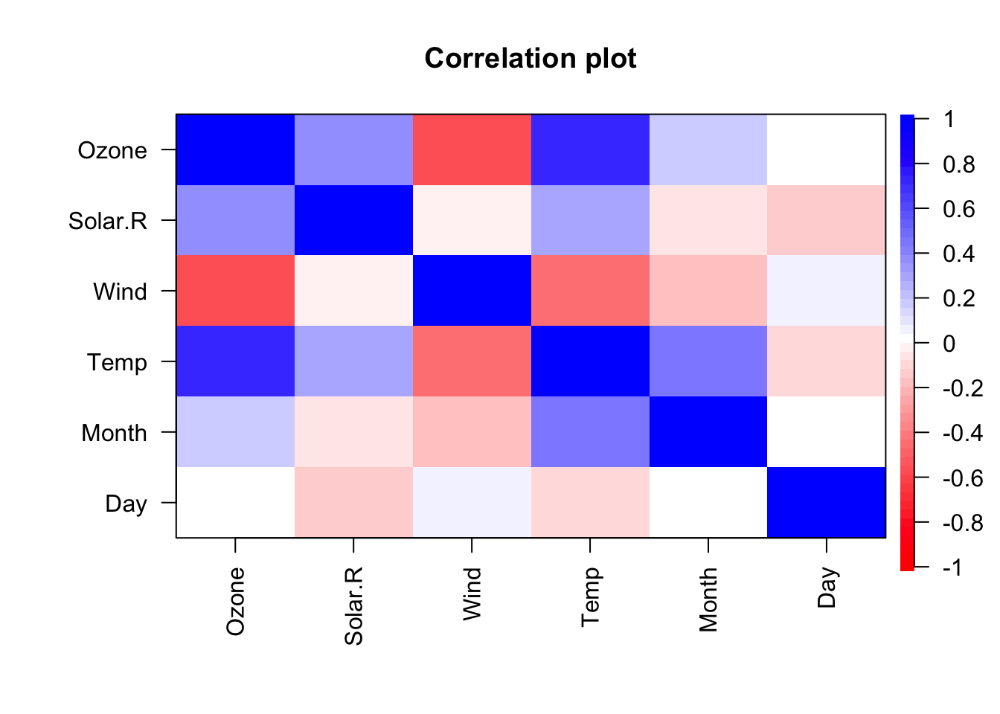

Looking at data
As we’ve already seen, using print(df) within an RMarkdown document creates a nice interactive table you can use to look at your data.
However you won’t want to print your whole data file when you Knit your RMarkdown document. The head function can be useful if you just want to see a few rows:
head(mtcars)
## mpg cyl disp hp drat wt qsec vs am gear carb
## Mazda RX4 21.0 6 160 110 3.90 2.620 16.46 0 1 4 4
## Mazda RX4 Wag 21.0 6 160 110 3.90 2.875 17.02 0 1 4 4
## Datsun 710 22.8 4 108 93 3.85 2.320 18.61 1 1 4 1
## Hornet 4 Drive 21.4 6 258 110 3.08 3.215 19.44 1 0 3 1
## Hornet Sportabout 18.7 8 360 175 3.15 3.440 17.02 0 0 3 2
## Valiant 18.1 6 225 105 2.76 3.460 20.22 1 0 3 1Or we can use glimpse()function from thedplyr::package (see the [section on loading and using packages](#packages)) for a different view of the first few rows of themtcars` data. This flips the dataframe so the variables are listed in the first column of the output:
glimpse(mtcars)
## Observations: 32
## Variables: 11
## $ mpg <dbl> 21.0, 21.0, 22.8, 21.4, 18.7, 18.1, 14.3, 24.4, 22.8, 19....
## $ cyl <dbl> 6, 6, 4, 6, 8, 6, 8, 4, 4, 6, 6, 8, 8, 8, 8, 8, 8, 4, 4, ...
## $ disp <dbl> 160.0, 160.0, 108.0, 258.0, 360.0, 225.0, 360.0, 146.7, 1...
## $ hp <dbl> 110, 110, 93, 110, 175, 105, 245, 62, 95, 123, 123, 180, ...
## $ drat <dbl> 3.90, 3.90, 3.85, 3.08, 3.15, 2.76, 3.21, 3.69, 3.92, 3.9...
## $ wt <dbl> 2.620, 2.875, 2.320, 3.215, 3.440, 3.460, 3.570, 3.190, 3...
## $ qsec <dbl> 16.46, 17.02, 18.61, 19.44, 17.02, 20.22, 15.84, 20.00, 2...
## $ vs <dbl> 0, 0, 1, 1, 0, 1, 0, 1, 1, 1, 1, 0, 0, 0, 0, 0, 0, 1, 1, ...
## $ am <dbl> 1, 1, 1, 0, 0, 0, 0, 0, 0, 0, 0, 0, 0, 0, 0, 0, 0, 1, 1, ...
## $ gear <dbl> 4, 4, 4, 3, 3, 3, 3, 4, 4, 4, 4, 3, 3, 3, 3, 3, 3, 4, 4, ...
## $ carb <dbl> 4, 4, 1, 1, 2, 1, 4, 2, 2, 4, 4, 3, 3, 3, 4, 4, 4, 1, 2, ...You can use the pander:: package to format tables nicely, for when you Knit a document to HTML, Word or PDF. For example:
pander::pandoc.table(head(airquality),
caption="Tables always need a caption.")
##
## ---------------------------------------------
## Ozone Solar.R Wind Temp Month Day
## ------- --------- ------ ------ ------- -----
## 41 190 7.4 67 5 1
##
## 36 118 8 72 5 2
##
## 12 149 12.6 74 5 3
##
## 18 313 11.5 62 5 4
##
## NA NA 14.3 56 5 5
##
## 28 NA 14.9 66 5 6
## ---------------------------------------------
##
## Table: Tables always need a caption.See the section on sharing and publishing for more ways to format and present tables.
Other useful functions for looking at and exploring datasets include:
summary(airquality)
## Ozone Solar.R Wind Temp
## Min. : 1.00 Min. : 7.0 Min. : 1.700 Min. :56.00
## 1st Qu.: 18.00 1st Qu.:115.8 1st Qu.: 7.400 1st Qu.:72.00
## Median : 31.50 Median :205.0 Median : 9.700 Median :79.00
## Mean : 42.13 Mean :185.9 Mean : 9.958 Mean :77.88
## 3rd Qu.: 63.25 3rd Qu.:258.8 3rd Qu.:11.500 3rd Qu.:85.00
## Max. :168.00 Max. :334.0 Max. :20.700 Max. :97.00
## NA's :37 NA's :7
## Month Day
## Min. :5.000 Min. : 1.0
## 1st Qu.:6.000 1st Qu.: 8.0
## Median :7.000 Median :16.0
## Mean :6.993 Mean :15.8
## 3rd Qu.:8.000 3rd Qu.:23.0
## Max. :9.000 Max. :31.0
## Or the more compact and useful output from describe() which is in the pysch package:
psych::describe(airquality)
## vars n mean sd median trimmed mad min max range skew
## Ozone 1 116 42.13 32.99 31.5 37.80 25.95 1.0 168.0 167 1.21
## Solar.R 2 146 185.93 90.06 205.0 190.34 98.59 7.0 334.0 327 -0.42
## Wind 3 153 9.96 3.52 9.7 9.87 3.41 1.7 20.7 19 0.34
## Temp 4 153 77.88 9.47 79.0 78.28 8.90 56.0 97.0 41 -0.37
## Month 5 153 6.99 1.42 7.0 6.99 1.48 5.0 9.0 4 0.00
## Day 6 153 15.80 8.86 16.0 15.80 11.86 1.0 31.0 30 0.00
## kurtosis se
## Ozone 1.11 3.06
## Solar.R -1.00 7.45
## Wind 0.03 0.28
## Temp -0.46 0.77
## Month -1.32 0.11
## Day -1.22 0.72There are also some helpful plotting functions which accept a dataframe:
boxplot(airquality)
psych::cor.plot(airquality)
These plots might not be worth including in a final write-up, but are very useful when exploring your data.